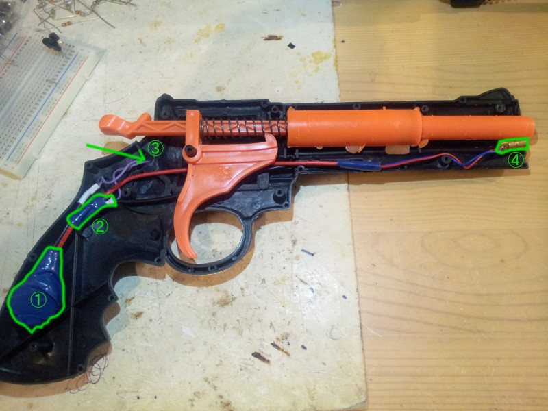
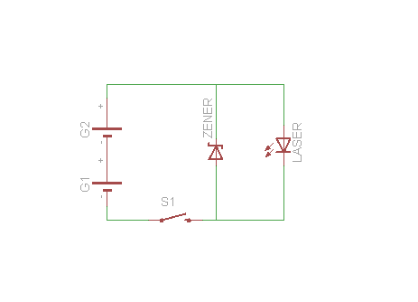

Toy gun with laser sight
The other day I spotted a plastic dart gun at the 100 JPY shop, big model "magnum" they said. It works surprisingly fine and shoots accurately at 4 meters range.
And there the geek kicks in : reminds me I bought a dozen of red laser diodes for 5 usd a few months ago, got some 5.1v Zener diodes too, a few second hand CR2032 Li-Ion coin battery, a simple contact switch from a DVD, 1 hour to spare... see where this is going?
Simplest circuit, using a Zener diode for
voltage regulator to limit voltage at 5.1v (got a 7v from the stacked 2 coin cell battery).

① poor man 2x coin cell ② Zener diode ③ the tact switch is on the outside of the gun ④ the 5v laser diode

Notice the Zener in revert position, that's because you want the Zener effect to guarantee you a 5.1V